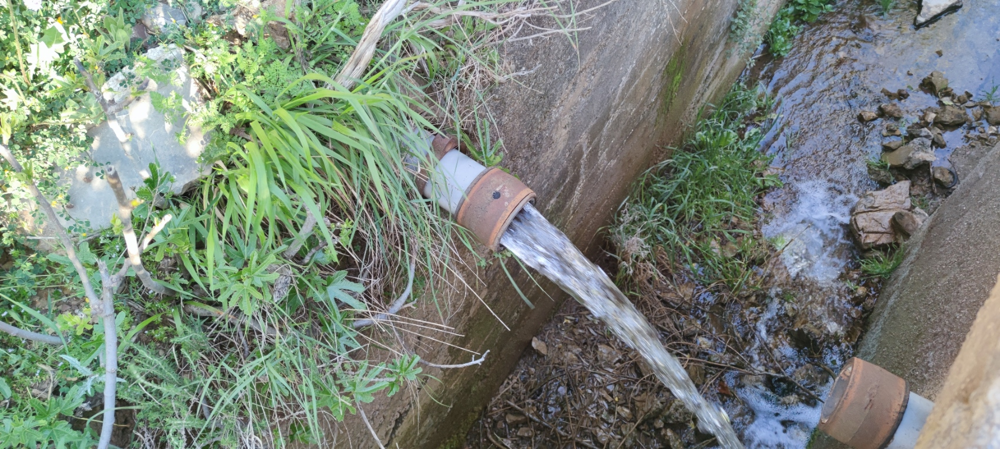
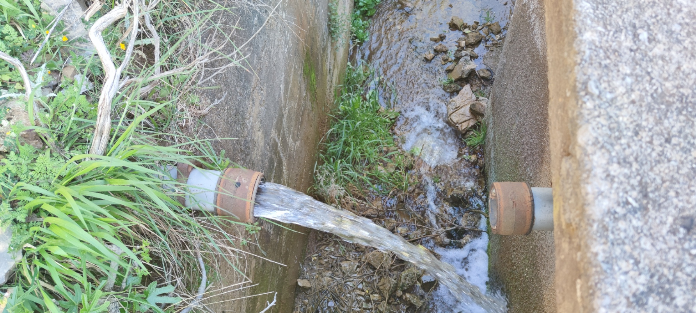
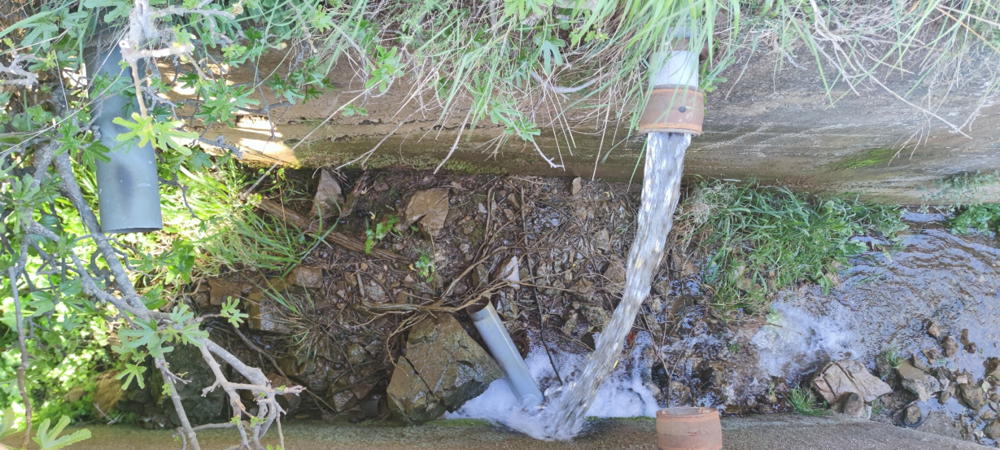
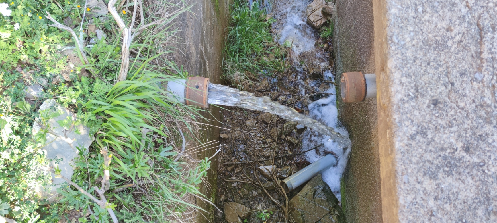
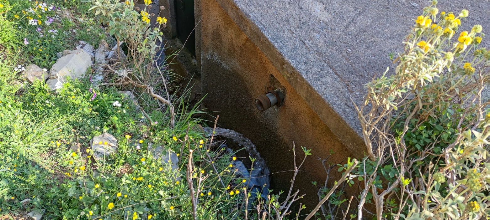
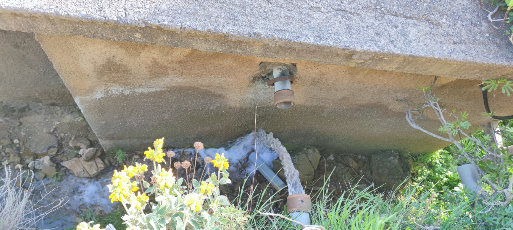
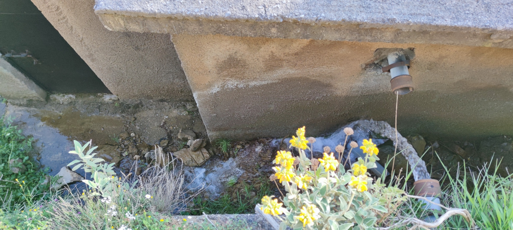

📷 Φωτογραφίες: 20 Απριλίου 2026 · Πηγή Ζενίκος και κεντρική δεξαμενή Σταυροδρομίου
Κυρίες και κύριοι της Δημοτικής Αρχής,
Ό,τι αντικρίσαμε στην κεντρική δεξαμενή του Σταυροδρομίου δεν είναι «βλάβη» και δεν είναι «προσωρινή ρύθμιση». Είναι εικόνα διοικητικής ανευθυνότητας σε κατάσταση ακινησίας: το νερό της πηγής Ζενίκος, που επί χρόνια υδροδοτεί τα χωριά της περιοχής, έχει αποσυνδεθεί από τη δεξαμενή και χύνεται στο ρέμα. Ο αγωγός δεν οδηγεί πια στον ταμιευτήρα. Το νερό χάνεται. Αιτία, σύμφωνα με την επιτόπια διαπίστωση: απόβλητα από παρακείμενο ποιμνιοστάσιο εισχώρησαν τον χειμώνα στην υδροσυλλογή.
Η κατάσταση αυτή θέτει άμεσο ζήτημα δημόσιας υγείας. Κι εδώ εντοπίζεται η ευθύνη της Δημοτικής Αρχής: δεν διαφαίνεται καμία ουσιαστική κινητοποίηση, κανένα χρονοδιάγραμμα αποκατάστασης, κανένα γραπτό ίχνος ενημέρωσης των αρμόδιων υπηρεσιών. Ούτε και από τους ίδιους τους κατοίκους ακούγεται κάτι. Σαν να εθίστηκαν και αυτοί στην αδράνεια.
Προς το παρόν, υδροδοτούμαστε από εφεδρική παροχή που προέρχεται από το «Πρώτο Παράθυρο», κοντά στο φράγμα της λίμνης του Λάδωνα. Το νερό αυτό εξυπηρετεί και άλλα χωριά. Το καλοκαίρι δεν έρχεται σε κάποιο απώτερο μέλλον· έρχεται τώρα, με αυξημένη κατανάλωση και φθίνοντα αποθέματα. Χωρίς τεχνική και διοικητική παρέμβαση, η λειψυδρία είναι βεβαιότητα.
Το νερό είναι δημόσιο αγαθό, συνταγματικά κατοχυρωμένο. Δεν ανήκει σε κανέναν αιρετό, σε κανέναν κτηνοτρόφο και σε κανέναν εργολάβο. Όταν η κύρια πηγή ύδρευσης ενός οικισμού τίθεται εκτός λειτουργίας, η δημοτική αρχή δεν δικαιούται να αρκείται σε «μελέτες» που δεν είδε κανείς και σε υποσχέσεις ότι «το καλοκαίρι θα τακτοποιηθούν όλα». Το καλοκαίρι έρχεται. Χωρίς ουσιαστική παρέμβαση, το μόνο που θα «τακτοποιηθεί» είναι η δίψα των κατοίκων.
Ζητούμε δημόσιες, γραπτές και τεκμηριωμένες απαντήσεις:
- Ποιος έδωσε εντολή να αποσυνδεθεί η πηγή Ζενίκος από την κεντρική δεξαμενή και με ποια αιτιολογία;
- Πότε έγινε η τελευταία επίσημη δειγματοληψία και εργαστηριακός έλεγχος του νερού της πηγής και της δεξαμενής, και ποια ήταν τα αποτελέσματα;
- Ποιες αρχές έχουν ενημερωθεί εγγράφως για την εισχώρηση αποβλήτων από το ποιμνιοστάσιο και ποια μέτρα έχουν επιβληθεί;
- Γιατί επελέγη ως «λύση» η εκτροπή του νερού στο ρέμα, αντί για την αποκατάσταση αδιάκοπης παροχής στα χωριά;
- Ποιο είναι το συγκεκριμένο χρονοδιάγραμμα, με ημερομηνίες και ονόματα υπευθύνων, για την αποκατάσταση της πηγής και την ασφαλή επανασύνδεσή της με τη δεξαμενή;
- Με ποια λογική κρίθηκε κατεπείγουσα η δαπάνη περίπου 5 εκατομμυρίων ευρώ για ψηφιακούς υδρομετρητές, έργο που φέρεται να ερευνάται, ενώ η εξασφάλιση βασικής, ελεγχόμενης ύδρευσης παραμένει χωρίς λύση;
Δεν μπορείτε να ζητάτε από τον πολίτη «κατανόηση» όταν εκείνος βλέπει με τα μάτια του την πηγή να χύνεται στο ρέμα, ενώ σήμερα πίνει από εφεδρική παροχή με αβέβαιο αύριο. Η κτηνοτροφική δραστηριότητα είναι σημαντική για την περιοχή, αλλά δεν λειτουργεί εκτός νόμου: όταν τα υγρά απόβλητα ποιμνιοστασίου απειλούν πηγή ύδρευσης, δεν τίθεται θέμα ισορροπίας ανάμεσα σε συμφέροντα. Τίθεται θέμα εφαρμογής της νομοθεσίας, προστασίας του περιβάλλοντος και σεβασμού του κοινού συμφέροντος.
Κυρίες και κύριοι της Δημοτικής Αρχής, η ευθύνη εδώ δεν είναι «συλλογική» για να διαχέεται και να χάνεται. Έχει ονόματα, υπογραφές και αρμοδιότητες. Αν η πηγή Ζενίκος παραμείνει αποσυνδεδεμένη, αν η δεξαμενή δεν αποκατασταθεί και αν το καλοκαίρι βρει τα χωριά με ανεπαρκή ύδρευση, αυτό δεν θα είναι «ατυχές συμβάν». Θα είναι υπόδειγμα διοικητικής αμέλειας. Και η αμέλεια στην προστασία της δημόσιας υγείας δεν συνιστά απλώς ηθικό παράπτωμα· είναι νομικό ζήτημα.
Σας καλούμε να σταματήσετε τα ημίμετρα και τις σιωπές, να δώσετε τις απαντήσεις που οφείλετε και να προχωρήσετε άμεσα στα αναγκαία έργα αποκατάστασης. Δεν διεκδικούμε κάτι περισσότερο από το αυτονόητο: καθαρό, ασφαλές, επαρκές νερό.
Εκεί όπου απειλείται η υγεία των ανθρώπων, η αδράνεια δεν είναι λάθος. Είναι συνενοχή.
Οι κάτοικοι του Σταυροδρομίου